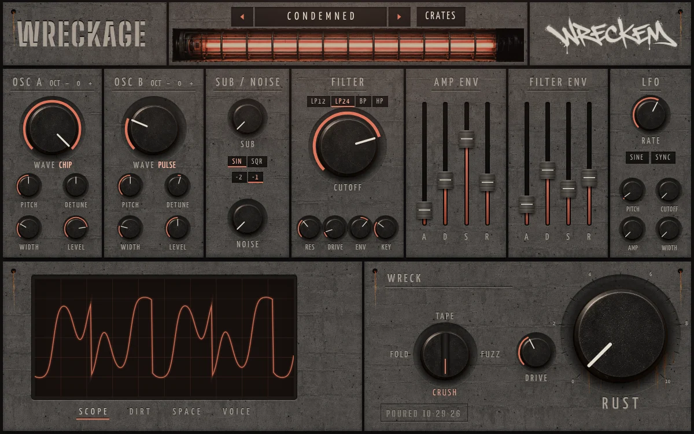
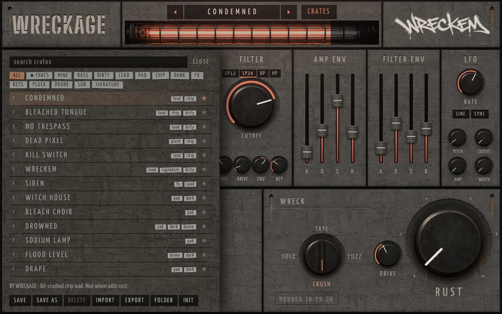

WRECKAGE

A synth built for WRECKEM. Grimy oscillators, a distortion chain called WRECK, and one big knob that rusts the whole wall. Made by Austin for October 29, 2026.

GET IT
DOWNLOAD FOR WINDOWSVST3 for FL Studio + standalone appOn a Mac? Grab the Mac version and read the note in the Problems section below.
INSTALL
-
Run WRECKAGE-Setup.exe
Windows will probably throw a blue box saying Windows protected your PC. Click More info, then Run anyway.
Why the warning: the installer isn't signed with a paid company certificate. It's a gift, not a product. Nothing's wrong with it.
-
Click through the installer
It puts the plugin in C:\Program Files\Common Files\VST3, which is where FL looks, and adds a standalone WRECKAGE app to the Start menu if you just want to mess around without opening FL.
-
Let FL Studio find it
In FL go to Options › Manage plugins and hit Find more plugins. WRECKAGE shows up under Generators. Star it so it's in your favourites.
-
Load it and make noise
Channel rack + › WRECKAGE. Step through presets with the arrows next to the name, or open CRATES for the whole shelf. Then grab RUST.
YOUR PRESETS
Make a sound you like, open CRATES and hit SAVE AS. Name it, tag it however you want (lead, dark, mine), sign it and leave a note.
Click a tag to filter the shelf, star the ones you keep going back to, arrow through them with the tube flickering. They save as plain .wreck files in Documents\WRECKAGE\Presets, so you can send them to people and drop theirs in.

HANDLING
- Double-click a knob
- back to default
- Shift + drag
- fine moves
- Mouse wheel
- nudge a knob
- Mod wheel
- pushes RUST live
- RUST
- drive, crush, tape wow, dirt and space all at once. The wall corrodes as you turn it.
- WRECK selector
- FOLD, TAPE, FUZZ or CRUSH
- DIRT / SPACE / VOICE
- tabs under the scope: bits, downsample, wow, reverb, unison, glide, mono, output
- Standalone app
- keys A–L play notes, Z/X change octave
PROBLEMS
It's not in FL's plugin list
Run Find more plugins again from Options › Manage plugins. If it still isn't there, check that C:\Program Files\Common Files\VST3\WRECKAGE.vst3 exists and that the scan paths in Manage plugins include that folder.
The window is black or blank
The interface runs on Microsoft's WebView2, which comes with Windows 11 and up-to-date Windows 10. If it's missing, install the Evergreen runtime from Microsoft's WebView2 page and reopen FL.
Crackles after a long session
FL's uneven buffer sizes upset a lot of plugins. In Options › Audio settings, turning on Use fixed size buffers usually sorts it.
Mac: "WRECKAGE can't be opened"
It isn't notarized by Apple. Unzip, copy the .vst3 to ~/Library/Audio/Plug-Ins/VST3 and the .component to ~/Library/Audio/Plug-Ins/Components, then run this once in Terminal:
xattr -dr com.apple.quarantine ~/Library/Audio/Plug-Ins/VST3/WRECKAGE.vst3 ~/Library/Audio/Plug-Ins/Components/WRECKAGE.component